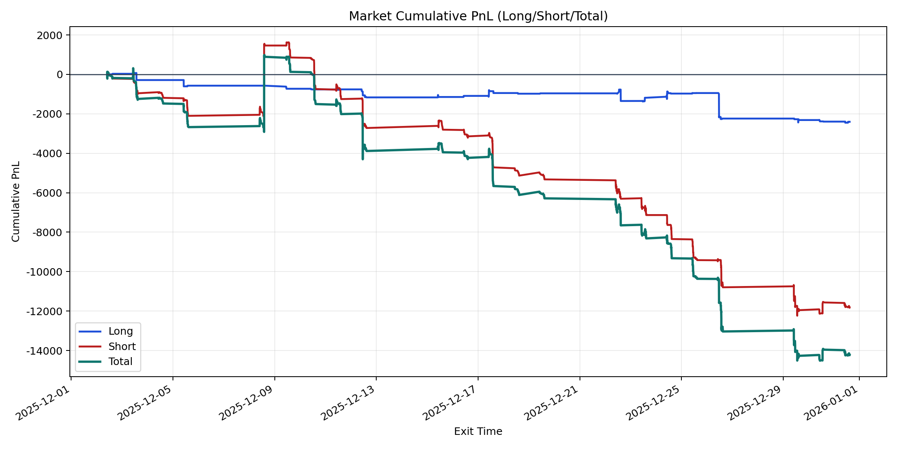
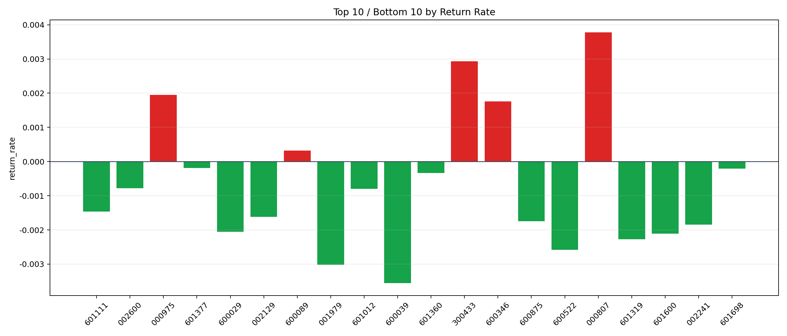

| repo_root | /home/haoranyou/data/output/alpha0.4_1w_5s_3ticks_index_filter/index_weights_300 |
|---|---|
| period_months | 1 |
| period_label | 2025-12-02_to_2025-12-31 |
| start_time | 2025-12-02 09:50:17 |
| end_time | 2025-12-31 14:45:04 |
| n_trades | 1517 |
| n_symbols | 26 |
| total_pnl | -14220.149549999973 |
| long_total_pnl | -2403.8431000000055 |
| short_total_pnl | -11816.30644999997 |
| total_entry_notional | 14329342.0 |
| long_entry_notional | 1853053.0 |
| short_entry_notional | 12476289.0 |
| total_return_rate | -0.0009923798001331794 |
| long_return_rate | -0.0012972338621723208 |
| short_return_rate | -0.0009471010530454984 |
| top_symbols_by_return | ["000807", "300433", "000975", "600346", "600089", "601377", "601698", "601360", "002600", "601012"] |
| bottom_symbols_by_return | ["600039", "001979", "600522", "601319", "601600", "600029", "002241", "600875", "002129", "601111"] |

